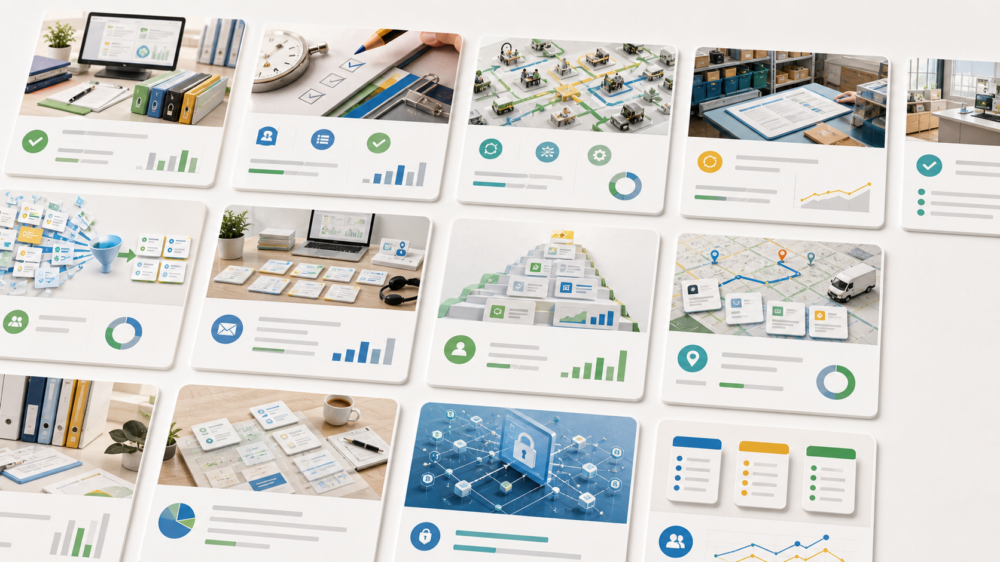

他社の改善事例
職場で止まっていた仕事が、確認して進める仕事に変わる。
現場、店舗、事務、営業、経理などの毎週くり返す仕事を、社名や製品名を出さずに匿名の改善ケースとして整理しました。読むポイントはツール名ではなく、「どの職場で、何が楽になり、どんな改善が残るか」です。

他社の改善事例
近い職場、近い悩み、近いメリットから読めます。
すべての事例で、AIは判断者ではなく準備担当です。どの材料を渡し、何が下書きされ、人がどこを確認するかまで分かるようにしています。
 建築・点検・現場型
建築・点検・現場型
車に戻った時点で、報告書と連絡文の下書きまで進んでいる
現場後の書類仕事を確認作業へ
写真整理、報告書、協力会社への問い合わせ文をAIが下書きし、現場責任者は判断だけに集中します。
 小売・観光施設・飲食
小売・観光施設・飲食
3時間かかっていたシフト表を、数分で候補チェックから始められるようにした
シフト調整を候補チェックへ
希望休、ピーク時間、担当できる作業、人件費をAIが見て、店長は公平性と現場感だけを直します。
 町工場・製造業
町工場・製造業
見積前に消えていた1〜2時間を、案件票から始められる仕事に変える
見積前処理を短くする
メール、図面、過去案件、材料情報をAIが案件票にし、人は価格と納期を判断します。
 店舗・多拠点・サービス業
店舗・多拠点・サービス業
レジ横の質問を店長に飛ばさず、AIマニュアルでその場の自己解決に変える
質問対応を自己解決へ
スタッフの繰り返し質問をAIマニュアルで受け止め、店長は例外と教育に集中します。
EC・小売・食品製造問い合わせの山を、AIが「返信できる順」に並べておく
返信待ちを短くする
問い合わせ分類、返信下書き、例外抽出をAIが行い、人は謝罪や判断が必要な対応に集中します。
 BtoB営業・不動産・士業
BtoB営業・不動産・士業
商談前後の探し物を減らし、フォローメールを当日中に見直せるようにする
商談準備を短く深く
顧客調査、議事メモ、提案論点、フォロー文をAIが作り、人は顧客との会話に集中します。
 製造業・品質管理
製造業・品質管理
検査後に散らばる不良写真を、翌朝の改善メモまで進めておけた
検査記録を改善会議へ
不良写真とロット情報をAIが整理し、人は原因と対策の判断に集中します。
 経理・支払い確認
経理・支払い確認
支払い前の確認を、請求書の読み直しから「差異を確かめる仕事」へ変える
支払い前の見落としを減らす
請求書と発注・納品情報を照合し、社長は差異と例外だけを承認します。
 経理・月次照合
経理・月次照合
月末の照合作業を、全部見直しから「差異だけ確認」へ変える
月末の照合を短くする
入金額、請求額、取引先名を先に突き合わせ、差異があるものから確認できます。
 採用・応募受付
採用・応募受付
応募者を待たせる前に、受付状況と面接日程を見直せる表にする
候補者を待たせない
履歴書、不足情報、面接候補日を応募者ごとにまとめ、返信の遅れを減らします。
 採用・面接
採用・面接
面接後のばらばらなメモを、採用会議で比べられる評価表にする
候補者比較がしやすくなる
面接官ごとのメモを同じ評価軸にそろえ、採用会議で比べやすくします。
不動産管理・修繕夜間の修繕連絡を、出動判断に入れる材料へ整えておく
1件15〜25分の聞き取りを圧縮
写真、物件情報、過去履歴を案件票にまとめ、緊急度の判断を早めます。
 介護・訪問サービス
介護・訪問サービス
夕方の申し送りを、探すメモから次の担当者が見直せる要点へ変える
申し送りが短く正確になる
利用者別の要点、未完了事項、家族連絡をまとめ、申し送りの抜けを減らします。
 EC・返品対応
EC・返品対応
返品と問い合わせを、返信できる順に並べておく
返品対応の初動が早くなる
返品理由、注文番号、写真不足を先に分け、返せる案件から対応できます。
 農業・産直出荷
農業・産直出荷
朝の注文確認を、梱包リストと連絡文まで進めておく
朝の出荷準備が早くなる
注文、在庫、収穫量を出荷先ごとに並べ、朝の箱詰め判断を進めやすくします。
 飲食店・仕込み計画
飲食店・仕込み計画
勘で決めていた仕込み量を、予約・天気・在庫を見た見直しリストにする
仕込みと人員確認が早くなる
予約、天気、在庫、人員を見比べ、仕込みすぎや不足を早めに確認します。
 宿泊・観光
宿泊・観光
多言語問い合わせを、翻訳だけでなく引き継ぎメモまで整える
引き継ぎ漏れを減らす
問い合わせ、到着予定、食事制限をまとめ、夜間担当への引き継ぎを短くします。
 美容サロン・予約管理
美容サロン・予約管理
予約変更とカルテ確認を、施術前のチェックリストへまとめる
施術前確認が落ち着く
予約変更、前回カラー、薬剤注意を並べ、施術前の確認を落ち着いて進めます。
 士業・契約書確認
士業・契約書確認
契約書レビュー前の読み込みを、論点リストまで進めておく
初回確認の時間を圧縮
差分、期限、金額、不足資料を論点化し、担当者が確認すべき箇所を絞ります。
クリニック・受付問診と予約確認を、診察前の不足リストにしておく
診察前の慌ただしさを減らす
予約情報と問診の不足を先に分け、診察前の受付対応を落ち着かせます。
 クリニック・フォロー
クリニック・フォロー
診察後のフォロー連絡を、患者別の見直しリストにしておく
診療後の連絡が整う
折り返し、未送信案内、医療者確認が必要な連絡を患者別に整理します。
 学習塾・習い事
学習塾・習い事
授業後の保護者連絡を、授業メモ・欠席・日程変更から下書きまで整える
連絡の抜け漏れを減らす
授業メモ、欠席、宿題状況をもとに、保護者連絡の下書きまでまとめます。
 補助金・助成金申請
補助金・助成金申請
補助金申請の証拠書類を、締切前に探さず見直せるようにする
締切前の探し物を減らす
見積書、請求書、写真、提出期限をまとめ、締切前の探し物を減らします。
 物流・配送
物流・配送
朝の配車変更を、連絡順と注意点まで整理しておく
朝の変更対応が早くなる
時間指定、積載、顧客連絡の要否を並べ、急ぐ便から判断できます。
 購買・仕入先比較
購買・仕入先比較
仕入先比較を、単価だけでなく納期・送料・リスクまで一覧で分かるようにする
仕入先判断が見えやすくなる
単価だけでなく、納期、送料、過去トラブルも含めて比較できます。
小売・在庫FAQ在庫確認と商品質問を、店頭ですぐ見直せる回答メモにする
店頭回答が安定する
在庫の根拠、説明文、店長確認が必要な例外を店頭で見られる形にします。
BtoB営業・追客失注理由を、商談後すぐ次の接点に変える
追客の抜け漏れを減らす
失注理由、未回答の宿題、次回接点を整理し、追客の抜け漏れを減らします。
 NPO・地域団体
NPO・地域団体
参加希望を、空き時間表と役割候補の確認表にする
調整の抜け漏れを減らす
参加希望、空き時間、役割候補を並べ、お願いする相手を選びやすくします。
 BCP・災害備え
BCP・災害備え
災害時の連絡網と備品点検を、平時から見直せる台帳にする
災害前の確認が早くなる
連絡先の古さ、備品不足、避難手順の抜けを平時から確認できます。
各記事は公開事例の共通パターンを抽象化した他社の改善事例です。特定企業の成果を自社サービスの成果として表示するものではありません。
相談
自社業務を自動化する
現場、店舗、製造、営業、事務の中から、最初に軽くする業務を一緒に選びます。
30分無料診断職場・メリット・できた改善
業種より先に、「誰の仕事が軽くなり、何が会社に残るか」を見てください。
帰社後、閉店後、月末、朝一番など、担当者が毎回抱えていた作業から探せます。
探す、読む、並べる、下書きする作業を先に進め、最後の判断は人が持ちます。
報告書、シフト、見積前処理、返信、照合を、ゼロから始めずに済む形へまとめます。
資料の置き場、指示の型、例外条件を整えるため、担当者が変わっても使えます。